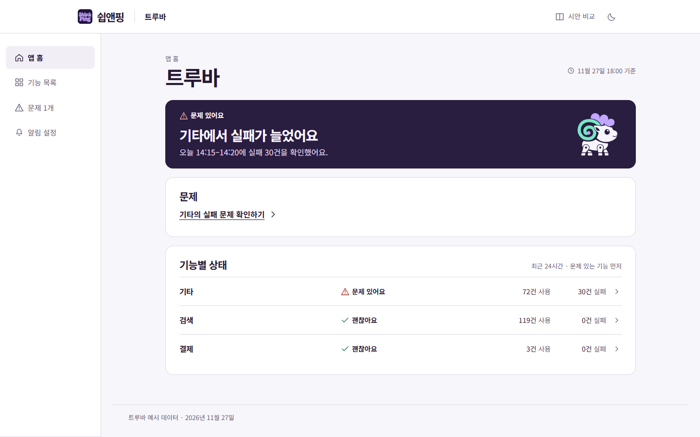
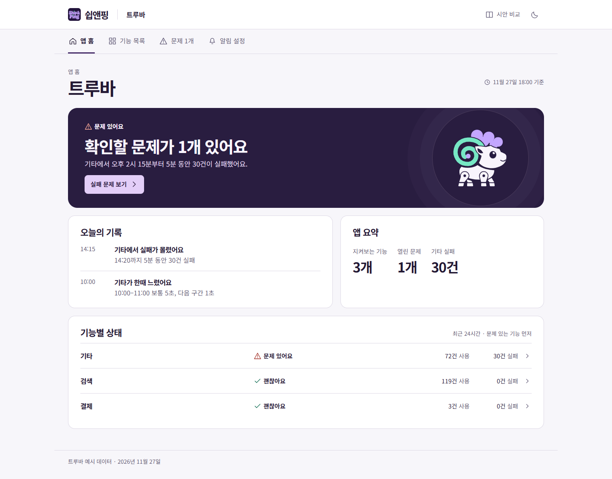
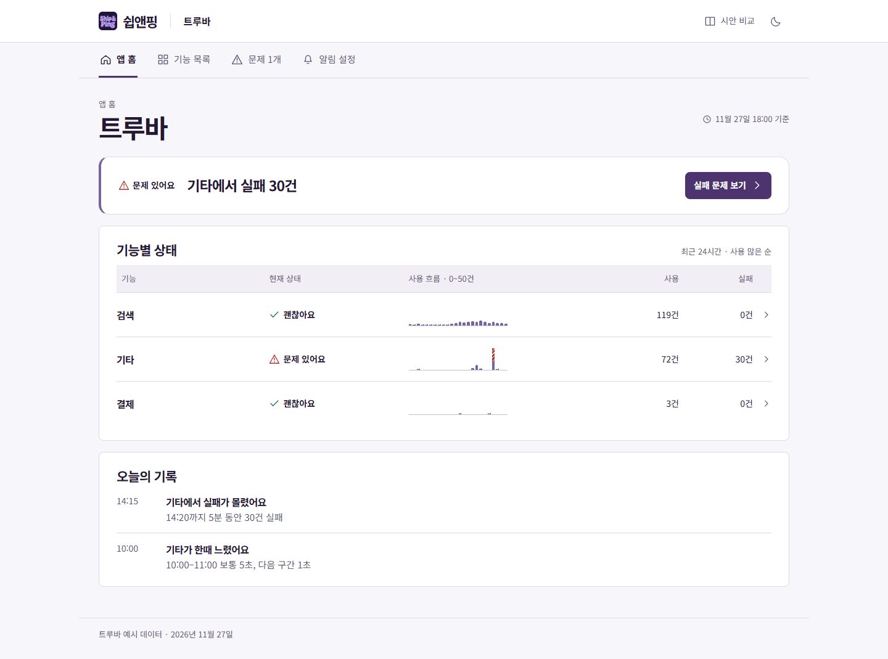

대시보드 시안 비교
트루바의 같은 하루를 세 방식으로 살펴보세요. 앱에 들어와 무엇을 먼저 확인해야 할지 알고 싶은 제작자에게는 B 상태 요약을 추천합니다.


같은 화면 전후 비교
휴대폰에서는 알림에서 연 문제와 요청문 복사 위치도 확인할 수 있습니다. 캡처를 누르면 원본 크기로 열립니다.
트루바의 같은 하루를 세 방식으로 살펴보세요. 앱에 들어와 무엇을 먼저 확인해야 할지 알고 싶은 제작자에게는 B 상태 요약을 추천합니다.



휴대폰에서는 알림에서 연 문제와 요청문 복사 위치도 확인할 수 있습니다. 캡처를 누르면 원본 크기로 열립니다.